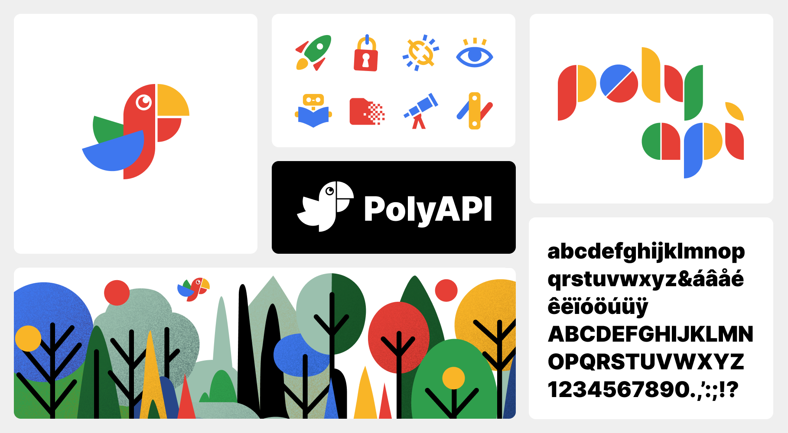
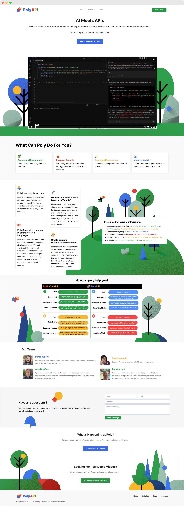

PolyAPI
Product design, brand design, logo design
Poly empowers development teams to streamline their API discovery and consumption process. With Poly, developers can quickly and easily discover known company-wide APIs right inside their IDEs, and consume them as local functions through a dynamic cross-API client library. Additionally, integration logic can be abstracted into a Lambda-like service, simplifying the development process.
Poly offers the ability to teach new APIs if they are not already integrated. Companies with a multiple APIs and consumers, or those looking to enhance their developer ecosystem, can benefit greatly from Poly's comprehensive API management capabilities.
Logo and branding elements
Marketing website modular background graphics
